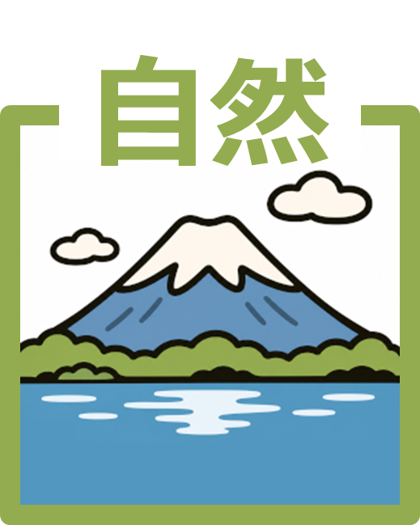

✦北海道のおすすめスポット✦
知床


水平線まで続く流氷の世界へ、世界遺産・知床
北海道の北東に突き出すように延びる知床半島。
ここは世界で最も低緯度に位置する流氷の到達地として知られており、冬期には流れ着いた流氷の上を専用のドライスーツを着て歩く「流氷ウォーク」を体験できる。知床の流氷は、ロシアのアムール川の水が凍って出来た氷であるため、ごく稀にロシアから乗ってきた野生のアザラシが運ばれてくることもあるそう。
知床は流氷が育む豊かな海洋生態系と原始性の高い陸息生態系の相互関係が評価され、2005年に世界自然遺産に登録されている。しかし近年は、地球温暖化の影響によって流氷が減少傾向にあり、豊かな生態系を取り巻く環境も変化しつつある。雄大な自然が織りなす知床ならではの絶景に興味があるならば、ぜひ早いうちに。
北海道斜里郡斜里町ウトロ西187-8